19/06/2026 — Nam giới ngoài 50 tuổi ngừng tim do rung thất (VF) – vì sao có ST chênh xuống lan tỏa kèm ST chênh lên ở chuyển đạo III?
Bản dịch tiếng Việt của bài "50-something with VF arrest – why is there diffuse ST depression with ST Elevation in lead III?" – Dr. Smith’s ECG Blog. Giữ nguyên toàn bộ 11 hình ảnh của bản gốc.

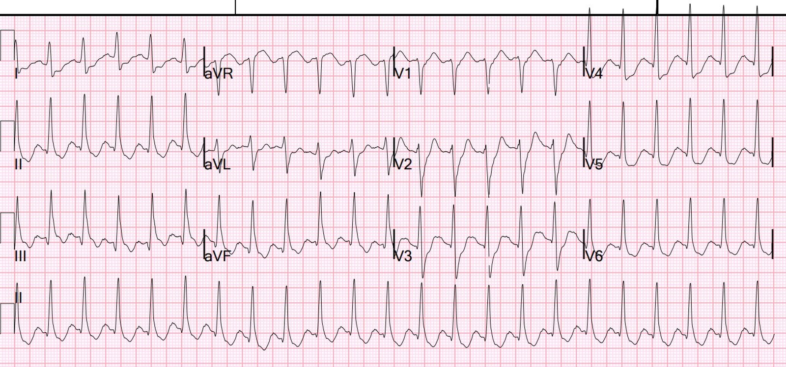
Một bệnh nhân nam ngoài 50 tuổi, không có tiền sử bệnh, khởi phát đau ngực rồi ngừng tim. Sau nhiều lần sốc điện, bệnh nhân được hồi sức thành công.
Bệnh nhân lại rơi vào rung thất (VF), lại được hồi sức và được nạp amiodarone 300 mg.
Đây là điện tâm đồ 12 chuyển đạo ban đầu:

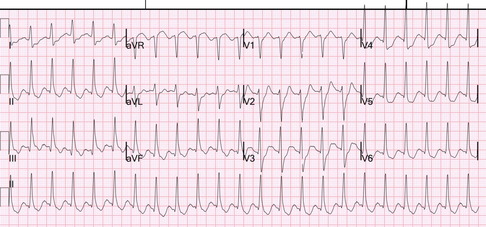
Bạn nghĩ gì?
Có nhịp nhanh xoang (có lẽ) với phức bộ QRS rộng không phù hợp với dạng blốc nhánh (BBB) nào, do đó là một “chậm dẫn truyền trong thất” (IVCD). Có ST chênh xuống ở I, II, aVL, aVF và các chuyển đạo trước tim V2-V6. Không chắc chắn liệu mức chênh xuống này tối đa ở V1-V4 hay ở V5-6, nhưng có lẽ là ở V4. Có ST chênh lên (STE) ở aVR, soi gương (reciprocal) với ST chênh xuống (STD) ở các chuyển đạo vùng mỏm.
Có ST chênh lên nhẹ ở chuyển đạo III. Khi có thiếu máu cục bộ dưới nội tâm mạc (subendocardial ischemia, SEI) lan tỏa, ST chênh xuống tối đa ở các chuyển đạo II và V5, và lẽ ra cũng phải có ST chênh xuống phần nào ở chuyển đạo III. ST chênh lên ở chuyển đạo III gợi ý “hình ảnh Aslanger (Aslanger Pattern)”, một hình ảnh OMI với STE chỉ ở một chuyển đạo (chuyển đạo III). Aslanger và các cộng sự, trong đó có tôi, đã mô tả hình ảnh này trong bài báo năm 2020: A new electrocardiographic pattern indicating inferior myocardial infarction.
Hình ảnh định trước được định nghĩa như sau:
(1) có STE bất kỳ ở chuyển đạo III nhưng không có ở các chuyển đạo thành dưới khác,
(2) STD ở bất kỳ chuyển đạo nào từ V4 đến V6 (nhưng không ở V2) kèm sóng T dương hoặc dương ở phần cuối,
(3) ST ở chuyển đạo V1 cao hơn ST ở V2 (Hình 1).
Ca của chúng ta ở đây có STD ở V2, nhưng tôi không nghĩ điều đó quan trọng; việc loại trừ STD ở V2 là để không nhầm lẫn OMI dưới-sau với OMI thành dưới + SEI. Điều thật sự quan trọng là có STE đơn độc ở chuyển đạo III và có lẽ có SEI lan tỏa.
Hình ảnh này chưa được mô tả trong bối cảnh IVCD hay BBB, nhưng tôi tin rằng nó vẫn áp dụng được.
Hình ảnh Aslanger có ý nghĩa gì? Nó có nghĩa là có SEI do bệnh ba nhánh mạch vành (3 vessel disease) CỘNG VỚI OMI thành dưới, thường do động mạch mũ.
Hình sau giải thích hình ảnh này:

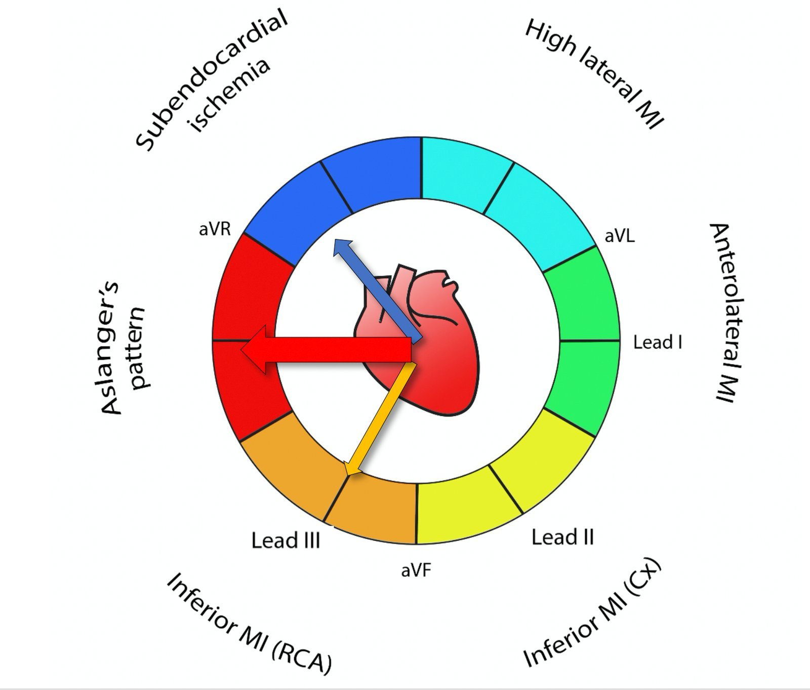
Véc-tơ 1: Bình thường, trong SEI, véc-tơ ST chênh xuống hướng về chuyển đạo II (cũng gây STD ở III và aVF. Véc-tơ ST chênh lên hướng về aVR.
Véc-tơ 2: Bình thường, trong OMI thành dưới, véc-tơ ST chênh lên hướng về chuyển đạo III (cũng gây STE ở II, aVF).
Nếu có CẢ OMI thành dưới LẪN SEI, ta cộng hai véc-tơ lại, và véc-tơ STE hướng thẳng sang phải. Điều này có nghĩa là sẽ chỉ có STE ở các chuyển đạo III và aVR, với STD ở II và aVF, dù có OMI thành dưới.
Kết quả đọc của Queen of Hearts ở đây:

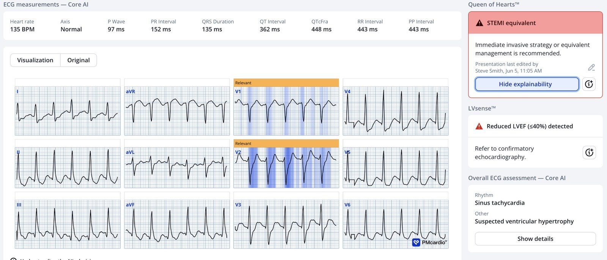
Queen dường như cho rằng đây là OMI thành sau.
Phòng thông tim (cath lab) đã được kích hoạt.
Một điện tâm đồ khác được ghi trong lúc chờ:

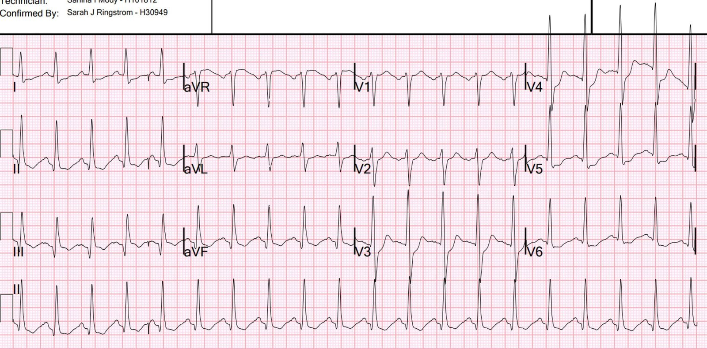
Điện tâm đồ này trông giống OMI thành sau đơn thuần hơn, và Queen đồng ý:

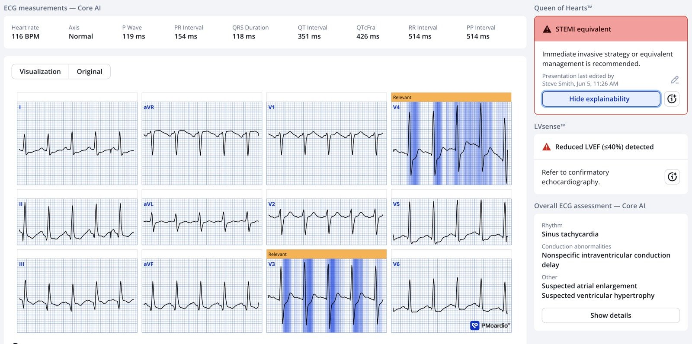
Bệnh nhân được dùng heparin và aspirin, không dùng thuốc ức chế P2Y12. Có lúc bệnh nhân tăng huyết áp khá nhiều và được dùng thuốc giãn mạch truyền tĩnh mạch chỉnh liều được. Tôi tin là nitroprusside.
Chụp mạch vành:
RCA: RCA là mạch có khẩu kính lớn, hẹp dạng ống 50% ở đoạn giữa và tắc ở đoạn xa. Tuần hoàn bàng hệ bắc cầu xuôi dòng mờ nhạt, tuần hoàn bàng hệ nhánh nón > LA > rPAV, và tuần hoàn bàng hệ L > R phát triển tốt tới hệ RCA đoạn xa lớn gợi ý mạnh một tắc hoàn toàn mạn tính. Thấy rPDA trung bình, rPLA1 lớn và rPLA2 trung bình được làm đầy qua tuần hoàn bàng hệ
LMCA: thân chung động mạch vành trái là mạch có khẩu kính trung bình với mảng xơ vữa nhẹ ở đoạn xa
LCx: động mạch mũ là mạch có khẩu kính trung bình với hẹp 80-90% ở lỗ xuất phát và tắc ở đoạn giữa. OM1 là mạch có khẩu kính nhỏ-trung bình, hẹp 70% ở lỗ xuất phát. Hai nhánh OM có khẩu kính nhỏ-trung bình được làm đầy ngược dòng qua tuần hoàn bàng hệ L > L.
LAD: LAD là mạch có khẩu kính trung bình-lớn chạy tới mỏm tim, vôi hóa mức độ vừa đến nặng ở đoạn gần và đoạn giữa. Có hai chỗ hẹp nối tiếp 60% và 90% ở đoạn gần. D1 là mạch có khẩu kính lớn, chia nhánh, với mảng xơ vữa nhẹ-vừa lan tỏa. Có hẹp lan tỏa 50% ở mLAD sau chỗ chia đôi D1 và LAD đoạn giữa có thể chạy trong cơ tim.
Tóm tắt: bệnh ba nhánh mạch vành (3 vessel) kèm tắc động mạch mũ. Trong nghiên cứu của Aslanger, đây là kết quả chụp mạch vành của hầu hết những bệnh nhân như vậy.
Không can thiệp gì. Bệnh nhân được lên lịch phẫu thuật bắc cầu chủ vành (CABG).
Tôi không rõ vì sao không can thiệp vào động mạch mũ đã bị tắc. Nhưng có vẻ như, thường thì khi đã xác định cần CABG, người ta không làm PCI trước đó. Tôi không hiểu đủ về vấn đề này để biết vì sao. Và các diễn biến sau đó cho thấy đã có mảng xơ vữa không ổn định gây thêm nhồi máu.
Siêu âm tim:
Phân suất tống máu thất trái ước tính bằng mắt là 5-10%. Thất trái giãn lớn. Rối loạn vận động vùng — mỏm, thành trước, trước bên và vô động thành dưới bên (rối loạn vận động thành dưới nặng)
Sau siêu âm tim, và 13 giờ sau ROSC, điện tâm đồ này được ghi:

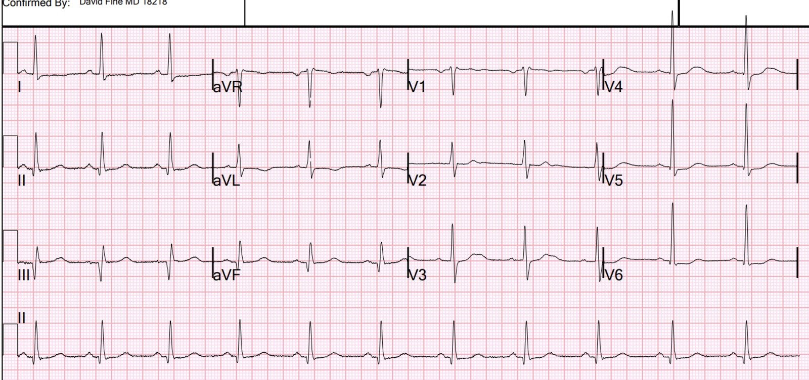
Điện tâm đồ này cho thấy nhồi máu thành dưới đáng kể (sóng Q sâu rộng ở II, III, aVF), nhưng thiếu máu cục bộ đã hết. (Không còn thiếu máu cục bộ đang diễn ra).
Troponin:
hs troponin I lần đầu: 1.029 ng/L, tăng lên > 60.000 sau 9 giờ. Ở giờ thứ 35, giảm trở lại còn 9.144.
Bệnh nhân được chụp MRI vào ngày thứ 3, khoảng 44 giờ sau khi nhập viện:
Chức năng trên MR: Chức năng tâm thu thất trái giảm mức độ vừa với phân suất tống máu tính được là 31%. Rối loạn vận động vùng – giảm động thành trước từ giữa đến mỏm, trước vách đoạn giữa, vách vùng mỏm và thành dưới vùng mỏm. Rối loạn vận động vùng – giảm động thành dưới bên đoạn đáy.
–Chức năng tâm thu thất phải bình thường với phân suất tống máu
tính được là 58%.
–Không thấy bất thường van tim đáng kể.
Kết quả sau tiêm thuốc tương phản -
Hình ảnh tưới máu lần đầu cho thấy giảm tưới máu gần như xuyên thành ở vách, thành dưới
và thành dưới bên. Sau khi tiêm gadolinium
liều 40 mL, các hình ảnh sớm thu với TI 400 msec cho thấy
cùng các kết quả đó, gợi ý thiếu máu cục bộ lúc nghỉ ở các đoạn vách, thành dưới
và thành dưới bên.
Các chuỗi xung ngấm thuốc muộn thu ở phút thứ 10 sau tiêm gadolinium
không thấy ngấm thuốc bất thường.
NHẬN ĐỊNH:
1. Các kết quả gợi ý thiếu máu cục bộ lúc nghỉ ở vùng chi phối của LAD và
RCA. Không có bằng chứng ngấm thuốc muộn, gợi ý
cơ tim còn sống ở tất cả các vùng mạch vành.
2.Chức năng tâm thu thất trái giảm mức độ vừa, phân suất tống máu
tính được 31%.
Ca bệnh tiếp diễn:
Bệnh nhân trở về phòng, rồi lại khởi phát đau ngực kèm phù phổi cấp đột ngột (flash pulmonary edema). Một điện tâm đồ được ghi:

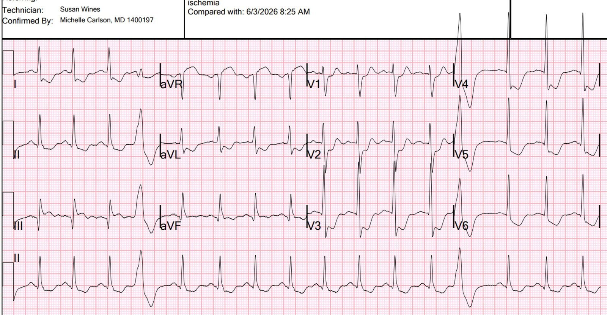
Điện tâm đồ này cho thấy rõ OMI thành dưới, cộng với hoặc SEI hoặc OMI thành sau. Nói cách khác, hình ảnh Aslanger so với OMI dưới-sau. Phòng thông tim không được kích hoạt.
Bệnh nhân được dùng NTG ngậm dưới lưỡi (SL), giúp giảm đau. Cũng khoảng thời gian đó, bệnh nhân đang được chuyển từ nipride sang clevidipine và bị phù phổi cấp đột ngột do tim với SBP tăng lên mức 160 mmHg và HR tăng lên 130 (nhịp xoang), kèm khó thở (SOB) và giảm oxy máu. Bệnh nhân được thở BiPAP và dùng lasix, cùng với một liều bolus NTG và bắt đầu truyền NTG (trong khi vẫn truyền clevedipine) giúp cải thiện tình trạng lâm sàng. POCUS cho thấy EF trong khoảng ~25%, không có dấu hiệu MR cấp.
4 giờ sau, đây là điện tâm đồ của bệnh nhân:

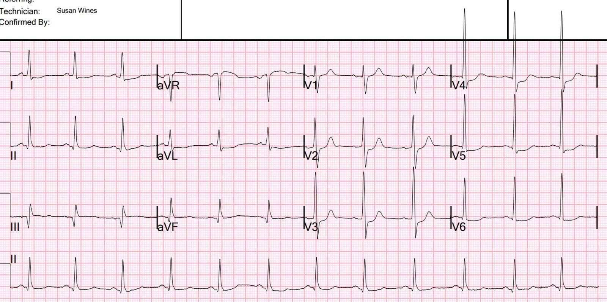
Tốt hơn nhiều nhưng vẫn phù hợp với OMI thành sau so với SEI còn tiếp diễn, và nhồi máu thành dưới.
Các guideline sẽ nói rằng bệnh nhân không ổn định này, có thiếu máu cục bộ và phù phổi, cần tái thông mạch máu cấp cứu.
Troponin sau đợt xảy ra sau MRI (đau ngực tái phát và phù phổi) tăng lên 9805, rồi 11.668, rồi giảm xuống 10.740.
Sau đó, trong đêm, bệnh nhân lại bị phù phổi cấp đột ngột, kèm cảm giác thắt ngực. Một điện tâm đồ khác được ghi:

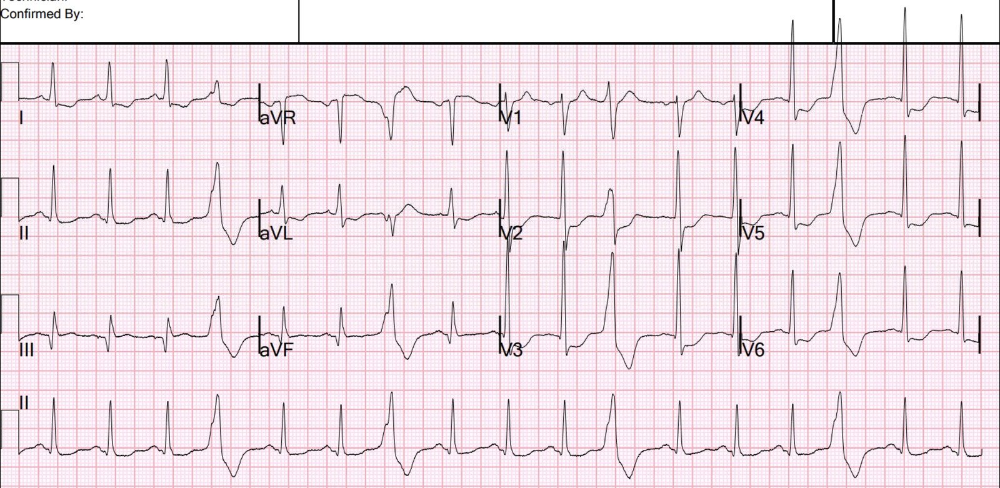
Thiếu máu cục bộ lại nặng hơn.
Sau đợt này, troponin lại tăng lên 21.654 ng/L.
Họ quyết định tiến hành CABG. Phẫu thuật bắc cầu 3 nhánh được thực hiện vài ngày sau đó.
Bệnh nhân hồi phục khá tốt.
= = =
==================================
BÌNH LUẬN CỦA TÔI, bởi KEN GRAUER, MD (19/6/2026):
Một bài học then chốt từ ca hôm nay — là cần học hỏi từ những quyết định đã không diễn ra như ta mong muốn. Dù thiện ý đến đâu — tương lai vẫn không thể đoán trước. Dù vậy — sự tinh tế của một hình ảnh Aslanger ít rõ ràng hơn là điều quan trọng cần nắm được, vì một lần nữa chúng ta lại thấy hậu quả đáng tiếc của việc không hành động theo những gì các điện tâm đồ liên tiếp đang cho ta biết.
- Ca hôm nay làm tôi nhớ lại bài đăng ngày 22 tháng Năm năm 2026 của chúng tôi — trong đó thách thức phân biệt giữa DSI (thiếu máu cục bộ dưới nội tâm mạc lan tỏa — Diffuse Subendocardial Ischemia) — với một hình ảnh Aslanger (trong đó có cả DSI + bằng chứng nhồi máu cơ tim cấp dưới-sau đang diễn ra) là MẤU CHỐT để không chỉ đẩy nhanh việc thông tim kịp thời, mà còn để tiến hành can thiệp PCI đúng lúc (Xem Bình luận của tôi ở cuối trang trong bài đăng ngày 22 tháng Năm năm 2026 này).
- Trong ca hôm nay — nhìn lại, chúng ta có thể khẳng định rằng PCI lẽ ra đã phải được làm nhiều ngày trước khi CABG cuối cùng được tiến hành (bằng chứng là nhiều đợt phù phổi cấp đột ngột do thiếu máu cục bộ với troponin tăng lên trên 20.000 — tất cả đều xảy ra sau khi thông tim đã cho thấy bệnh nhiều nhánh mạch vành nặng kèm tắc cấp — nhưng trước khi CABG cuối cùng được lên lịch).
= = =
Một hình ảnh Aslanger chắc chắn:
Điện tâm đồ thứ 4 trong ca hôm nay minh họa hình mẫu hình ảnh Aslanger mà chúng ta cần khắc sâu vào trí nhớ (Xem điện tâm đồ #4 bên dưới — trong Hình 1).
- Có DSI nền (thiếu máu cục bộ dưới nội tâm mạc lan tỏa — còn gọi là SEI = thiếu máu cục bộ dưới nội tâm mạc (SubEndocardial Ischemia)) — nhận ra nhờ ST chênh xuống ở nhiều chuyển đạo (các mũi tên XANH LAM trong Hình 1) đi kèm ST chênh lên ở chuyển đạo aVR (mũi tên ĐỎ ở chuyển đạo này).
- Như BS. Smith đã giải thích ở trên — sự hiện diện đồng thời của OMI thành dưới cấp được báo hiệu bằng ST chênh lên ở chuyển đạo III (trong hình chữ nhật ĐỎ ở Hình 1) — nhưng không có ST chênh lên ở 2 chuyển đạo thành dưới còn lại.
- Đúng là đoạn ST ở chuyển đạo aVF có dạng vòm (coving) và không chênh xuống nhất quán ở cả 4 nhát thấy được trong chuyển đạo này — nhưng đoạn ST ở aVF không chênh lên một cách rõ ràng như ở chuyển đạo III.
- Như thường gặp, điện tâm đồ ở Hình 1 không chỉ gợi ý OMI thành dưới — mà còn gợi ý OMI thành sau qua dấu hiệu ST chênh xuống tối đa ở các chuyển đạo V3 và V4.
- Cũng phù hợp với OMI cấp trên bản ghi này là 2 PVC (các dấu “X” trong Hình 1).
- Điều cần nhớ (“Take-Home” Point) — Ở bệnh nhân có triệu chứng, ST chênh lên ở chuyển đạo III (nhưng không ở các chuyển đạo II và aVF) xuất hiện cùng với bằng chứng DSI trên điện tâm đồ — gợi ý ít nhất có một phần của hình ảnh Aslanger ==> OMI thành dưới cấp bên cạnh DSI, nhiều khả năng cần thông tim sớm.
= = =
Hình 1: Điện tâm đồ thứ 4 đã trình bày ở trên trong phần bàn luận của BS. Smith — ghi trong diễn tiến của ca hôm nay vào lúc đau ngực tái phát kèm một đợt phù phổi cấp đột ngột.

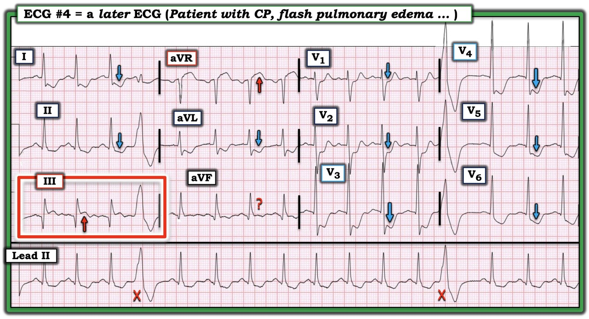
= = =
Những đặc điểm thú vị trên điện tâm đồ #1 và #2:
BS. Smith đã sớm nhận ra sự hiện diện của hình ảnh Aslanger trên điện tâm đồ ban đầu ( = điện tâm đồ #1 trong Hình 2 bên dưới) của ca hôm nay. Tôi đã không nhận ra điều này cho đến lúc xem lại về sau, vì một số lý do:
- Điện tâm đồ #1 là điện tâm đồ đầu tiên ghi sau ROSC (tái lập tuần hoàn tự nhiên) ở bệnh nhân này, người đã cần nhiều lần sốc điện mới có lại mạch. Như chúng tôi thường lưu ý trong Dr. Smith’s ECG Blog — khi thấy ST chênh xuống lan tỏa trên điện tâm đồ đầu tiên ghi sau ROSC từ ngừng tim — thường tốt nhất là ghi lại điện tâm đồ sau khi chờ ~15 phút — để xem các bất thường ST-T lan tỏa có đang giảm đi hay không (điều có thể xảy ra nếu ST chênh xuống chỉ đơn thuần là hậu quả của tình trạng “không có dòng chảy” (no flow) thoáng qua do ngừng tim — chứ không phải do nhồi máu cấp).
- Mặc dù xử trí tức thời bệnh nhân này dường như sẽ không thay đổi dù có hay không có hình ảnh Aslanger trên điện tâm đồ ban đầu sau hồi sức — tôi vẫn chưa chắc chắn 100% về nhịp. Vì vậy tôi đọc điện tâm đồ #1 là một SVT đều với tần số nhanh ~135/phút, với một sóng dương trước mỗi QRS ở chuyển đạo II có lẽ là sóng P xoang — nhưng cũng có thể chỉ phản ánh phần cuối của một sóng T dương (dấu ? ĐỎ ở chuyển đạo II của điện tâm đồ #1).
- Gợi ý có sóng P dương rõ ở các chuyển đạo I và aVL của điện tâm đồ #1 nghiêng về nhịp nhanh xoang là nguyên nhân của nhịp này.
- ĐIỂM THEN CHỐT (PEARL) #1: Theo kinh nghiệm của tôi — việc thấy sóng âm tinh tế trước mỗi QRS ở chuyển đạo V1 (mũi tên ĐỎ ở chuyển đạo này) đi kèm nhịp nhanh QRS hẹp như ta thấy trên điện tâm đồ #1 — rất thường hóa ra là biểu hiện của sóng P xoang (đường chấm ĐỎ làm nổi bật sự xuất hiện đồng thời của các sóng P này ở các chuyển đạo II và V1).
- Vì vậy tôi đã nghĩ, “Dù không chắc chắn 100% rằng nhịp trên điện tâm đồ #1 là nhịp nhanh xoang — có lẽ là vậy, và vì bệnh nhân rõ ràng đã khá hơn (đã đạt ROSC) — sự cải thiện được dự kiến về tình trạng lâm sàng của bệnh nhân trong vài phút tới gần như chắc chắn sẽ làm tần số chậm lại ít nhiều, điều nhiều khả năng sẽ giúp phân biệt rõ hơn nhiều giữa sóng T và sóng P xoang ở chuyển đạo II).
- Tần số giảm xuống ~115/phút trên điện tâm đồ #2 nhanh chóng xác nhận chắc chắn 100% rằng nhịp là nhịp nhanh xoang.
Lý do cuối cùng khiến tôi không nhận ra hình ảnh giống Aslanger trên điện tâm đồ #1 — là đường nền đoạn ST dao động ở chuyển đạo III. Ví dụ — mũi tên CAM gợi ý có ít nhất một mức ST chênh lên ở chuyển đạo III của điện tâm đồ #1 — trong khi mũi tên VÀNG thì không.
- Và, vì các biện pháp xử trí ban đầu khó có thể thay đổi trong vài phút tới dù có hay không có hình ảnh giống Aslanger — tôi thấy không cần phải khẳng định chẩn đoán OMI trên bản ghi sớm sau hồi sức này.
= = =
ĐIỂM THEN CHỐT (PEARL) #2: Phần so sánh giữa điện tâm đồ #1 và #2 ở Hình 2 là minh họa tuyệt vời cho thấy đôi khi khó khăn thế nào để phân biệt giữa DSI với hình ảnh Aslanger với sự hiện diện của cả DSI lẫn OMI cấp (= hình ảnh Aslanger).
- Tôi đánh giá mức ST chênh xuống tương đối ở các chuyển đạo ngực bên của điện tâm đồ #1 là tương đương với mức ST chênh xuống ở các chuyển đạo V2,V3,V4. Do đó — tôi đọc điện tâm đồ #1 là DSI không có dấu hiệu rõ ràng của OMI cấp.
- Ngược lại, trên điện tâm đồ #2 — tôi nghĩ cả DSI lẫn OMI dưới–sau cấp đều nhiều khả năng hiện diện vì: i) ST chênh xuống dường như tối đa ở các chuyển đạo V3,V4 (do đó gợi ý OMI thành sau); — và, ii) Đoạn ST có dạng vòm và có vẻ ít nhất là chênh lên nhẹ ở chuyển đạo III — với điểm J của đoạn ST ở chuyển đạo III này rõ ràng nằm cao hơn so với ở 2 chuyển đạo thành dưới còn lại (do đó gợi ý một hình ảnh giống Aslanger, chỉ điểm OMI thành dưới cấp).
= = =
Hình 2: So sánh giữa 2 điện tâm đồ đầu tiên trong ca hôm nay.

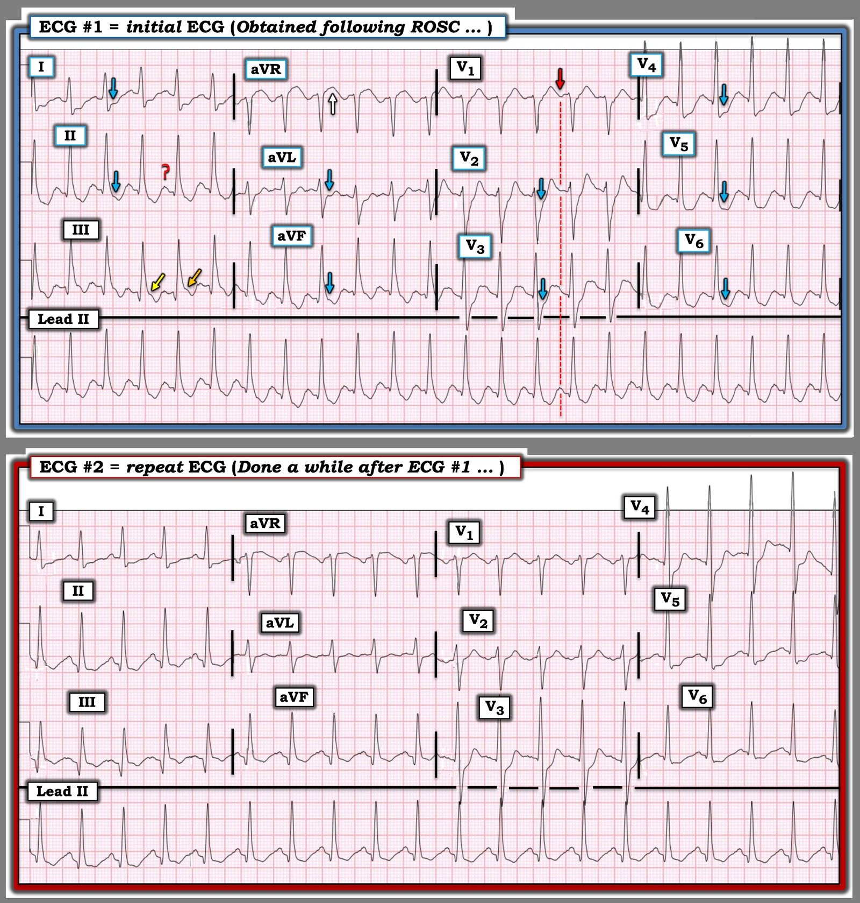
= = =
= = =